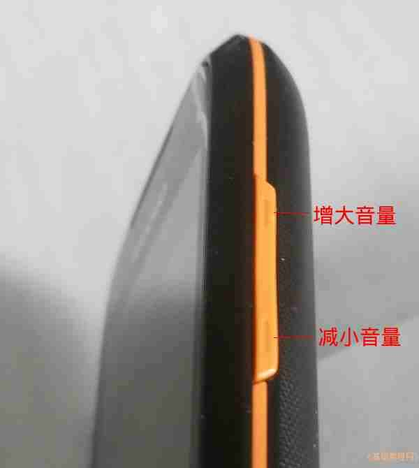
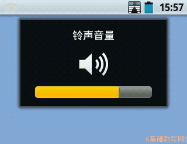
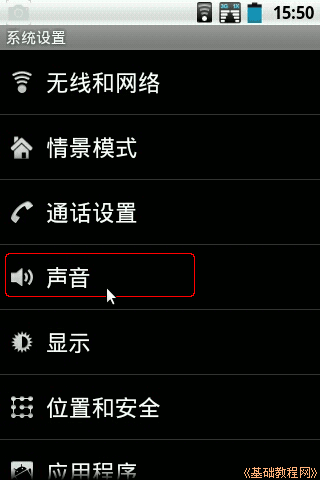
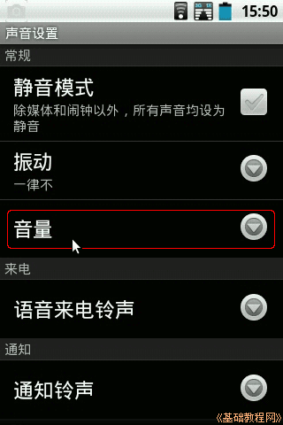
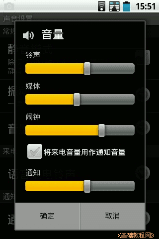
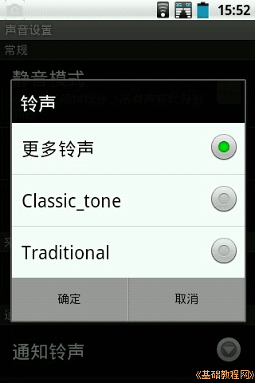
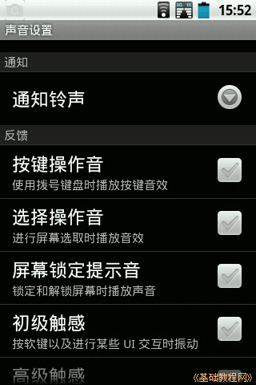

Android 安卓智能手机操作教程
作者：TeliuTe 来源：基础教程网
四、设置铃声、音量 返回目录 下一课本节教你学会设置手机铃声和音量大小，开启震动等；
1、铃声、音量大小
1）在手机侧面有两个音量调节按钮，按上面的增大音量，按下面的减小音量；

2）按一下侧面的音量按钮，屏幕上就会显示音量大小，有些手机是在通话过程中按才有效；

3）其他音量，点按左下角的“菜单”按钮，依次选择“系统设置，声音”；

4）在声音设置里，可以设置成静音模式和震动选项；

5）点按“音量”，可以分别设置铃声、媒体、短信通知的音量大小，点“确定”保存设置；

6）在声音里还可以选择来电音乐，短信提示音等，点“更多铃声”在SD卡中选择；

7）其他还可以在初级触感中，设置操作时是否震动提示；

8）选项后边的按钮灰色表示禁用，绿勾表示启用，下拉三角表示还有进一步选项；
本节学习了设置铃声、音量的基础知识，如果你成功地完成了练习，请继续学习下一课内容；
本教程由86团学校TeliuTe制作|著作权所有
基础教程网：http://teliute.org/
美丽的校园……
转载和引用本站内容，请保留作者和本站链接。